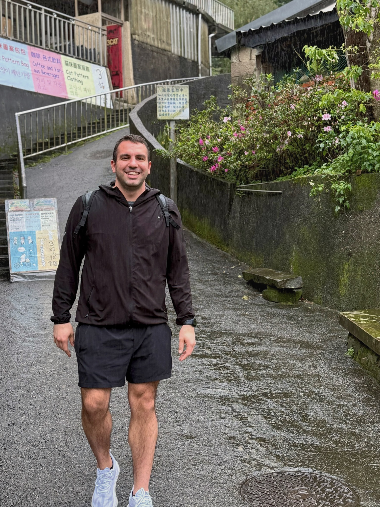

About Me

Born and raised in Akron, Ohio. The Rust Belt. Same hospital as LeBron James, though that's about where the basketball comparisons end. My dad was a Computer Science professor, and I grew up studying Biology, Community Health, and Computer Science at Malone University in Canton ... about 20 minutes down the road from where I started. I later got my Masters in Financial Economics from Kent State University and did executive education at Harvard Kennedy School focused on rethinking financial inclusion.
For the first 23 years of my life I never left Ohio. I never got on a plane. I didn't really know what was out there. Then everything changed pretty quickly. My first flight was to California to tour the Google offices and I came back feeling super inspired. My second flight was to Mexico to visit an orphanage on behalf of what would eventually become FinMango. At that point it wasn't even a registered nonprofit yet, just an idea and a gut feeling that financial health mattered more than people realized. Those early trips cracked something open. I grew up in a bubble and once I finally got out of it, I kind of went crazy in the best possible way. I became deeply open minded, non-judgmental, hungry to understand how other people live and think. I've now traveled to 39 countries and counting. The goal is all of them. Meeting new people and exploring different cultures is one of the things that makes me feel most alive.
Today I run FinMango, a nonprofit focused on financial health for young adults and vulnerable communities. It's my baby and my life's work. I also run Fresho, an AI-powered advertising company. I've spoken on TEDx stages in Togo and Brazil, and my work has been recognized by Google Health and the World Bank. But at the core I'm just someone who loves solving big problems with simple solutions.
When I'm not building things, I'm almost certainly on a tennis court. Tennis is my sport. I picked up a racquet in 2005 after watching James Blake vs. Andre Agassi in the US Open quarterfinals as a 13 year old kid channel surfing, and I've been obsessed ever since. I played in college and still play a few times a week. No other sport teaches you more about resilience, responsibility, and just doing the thing instead of thinking about it. You can find me documenting the obsession on YouTube and Instagram at @ScottPlaysTennis.
Beyond tennis, I'm usually rock climbing, jogging, biking, or playing pickup basketball. I'm also endlessly curious about history, geopolitics, food culture, literature, and whatever rabbit hole I happen to fall into on a given week.
I live jointly in the United States and Australia. Reach me at scott@finmango.org with any comments, questions, or interesting ideas.